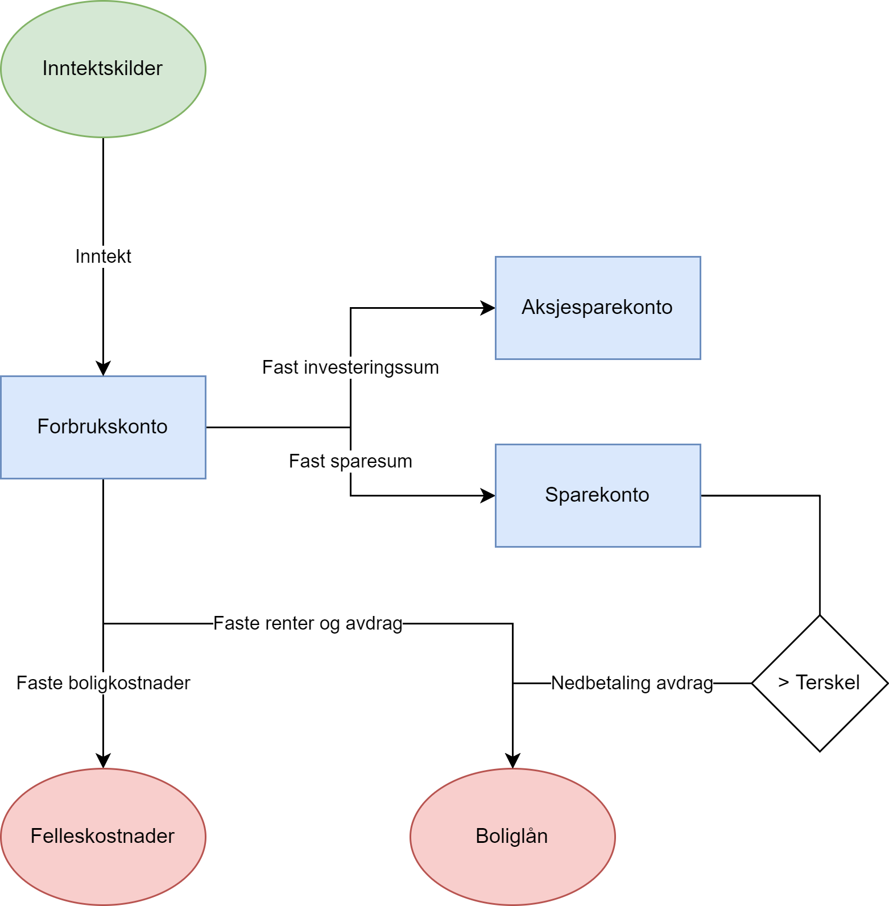
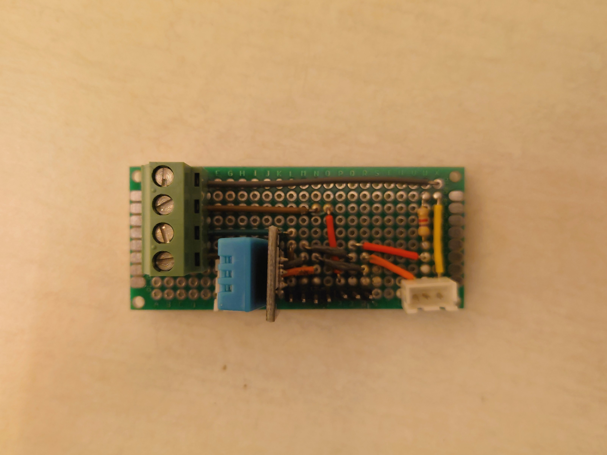

Dette er en litt lengre og illustrativ jobbsøknad enn vanlig, men jeg tror det gir mening å vise frem litt bilder og beskrive noen relevante erfaringer med tanke på en system arkitekt må lage ulike typer dokumentasjon og ha god forståelse for alle ledd som inngår i et system.
Min situasjon er at jeg er ansatt i Siemens Digital Industries som Software Developer, men vil teste ut vannet som arkitekt fordi at jeg ønsker å ha ansvar for å designe gode digitale løsninger.
Å dokumentere systemer krever godt håndtverk og designet må være enkelt, enkelt design. Legg inn motivasjon for tittelen
For å illustrere poenget så viser jeg frem noe av mitt skisseringsarbeid. Wireframes og visualisering er verktøy som jeg bruker for å dokumentere arkitektur. Bildet under viser min økonomi i det tilfellet jeg hadde kjøpt en bolig og illustrerer hvordan mine inntektskilder som for eksempel lønn, vil strømme inn til en sentral forbrukskonto. Transaksjoner kan bli periodisk gjennomført til mer spesifikke kontoer og enkle scripts kan bli satt opp til å automatisere nedbetaling på lån hvis man ønsker det.

Jeg har mye å lære om strøm generelt og energibransjen spesielt. Til gjengjeld så har jeg hatt grunnleggende undervisning i strøm på skolebenken og praktisk erfaring med lavspennet strøm.
I løpet av studiet mitt på Ingeniørvitenskap og IKT så bidro jeg i to prosjekter som utfordret meg praktisk i lavspennet strøm fordi at jeg måtte både designe og lage prototyper av kretskort. En sommer så var jeg og en annen student (marinteknologi) hyret inn av en professor ved Marinteknisk Institutt med oppdrag om å lage en bøye for å hente inn telemetri langs kysten. Motivasjonen var at elever ved videregående skoler fra hele Norge skulle kopiere vårt design og lage sine egne varianter for en konkurranse, Ocean Space Race.
Dette prosjektet involverte blant annet følgende aktiviteter; lodde eget kretskort, programmering av mikrokontroller, tilkobling av både analoge og digitale sensorer, trådløs kommunikasjon over NB-IoT nettet, MQTT, HTTP, GPS, og skrive dokumentasjon.
Inspirert av dette så hadde jeg bestemt meg for å fortsette med et lignende prosjekt for et obligatorisk særemne. Siden at jeg hadde helt frie tøyler så hadde jeg fokus på at systemet skulle måtte bruke en skyplattform og at lokal kommunikasjon skulle gå via MQTT. For å skape kontekst til oppgaven min så kontaktet jeg et lokalt oppstartsselskap, Plant Tech, som hadde laget et kontrollert miljø i en kjeller for å gro microgreens. Varene ble solgt til pene restauranter og hoteller i hele Trondheim sentrum. Bildet under viser kretskortet som jeg laget i forbindelse med dette prosjektet.

IEC er veldig spesifikt til transformatorstasjoner og den første setningen på WikiPedia er følgende; IEC 61850 is an international standard defining communication protocols for intelligent electronic devices at electrical substations.
Jeg har ikke erfaring i fra strømbransjen, så jeg har enda ikke hatt anledning til å bruke IEC protokollen.
For å forstå IEC bedre så må jeg lære mer om; meldingsstruktur, datamodellen, forhold mellom deltagere (både client-server og pub-sub), et kompatibelt klient-bibliotek i et generelt programmeringsspråk.
Hvis det finnes en lett måte å lese innholdet av en enhet som snakker IEC61850 på en datamaskinen som kan boote Linux eller Windows så er jeg veldig komfortabel til å si at jeg allerede kan mye om hvordan man kunne laget et system rundt IEC protokollen. Jeg har aldri brukt den før, men har allerede funnet klient-biblioteker for både C og C#.
Siemens Smart Infrastructure sine digitaliseringsprosjekter vil ha bruk min erfaring med kommunikasjon mellom datamaskiner. Jeg er motivert for å jobbe tett opp mot IEC protokollen i sammenheng med utvikling av klienter som kan viderekommunisere med et sentralt grensesnitt eller som en del av et nettverk med klienter. Jeg har erfaring med både remote tilkobling og lokal kommunikasjon mellom enheter.
Disclaimer: Det er nevnt to IEC protokoller i annonsen, 61850 og 60870-5-104, men jeg har forstått det slik at de dekker samme bruksområde så jeg bruker IEC som fellesbetegnelse.
Jeg har stort fokus på kunnskapsdeling så jeg tar aktive beslutninger om å kommunisere hva jeg kan og lære fra andre. Når jeg har hatt ansvar for system design så har jeg inkludert mine kollegaer tidlig og lagt til rette for at de kan dele sine perspektiver og tanker. Jeg tilpasser metodene jeg bruker etter prosjektets natur, men et utvalg av aktiviteter jeg har erfaring med er; workshops, brainstorming, diskusjoner, presentasjoner, requirements engineering, live-skissering
Det er også viktig å ha en god dialog med kunder, men jeg ønsker ikke omfattende ansvar for å etablere kunderelasjoner. Derimot så har jeg erfaring med å jobbe tett mot kunder og sluttbrukere fordi at det er en nødvendig for å bygge et korrekt system.
i designfase, holde de oppdatert på status, gi tekniske råd og svar. direkte design mot kunde, men Derimot har jeg full tro på at i Smart Infrastructure så er det mange kollegaer som kan destillere kundens ønsker slik at jeg kan ha et spisset fokus på utformingen av systemer som lever opp til forventningene.
Jeg er selvstendig i arbeidet mitt og liker å løse problemer på egenhånd så langt det er for det beste. I de tilfellene jeg trenger bistand eller har behov for andres perspektiv så nøler jeg ikke med å ta kontakt. For denne stillingen så er kvaliteten på samarbeidet mellom for eksempel; kollegaer, kunder, og salg en kritisk faktor for suksess.
Jeg liker å snakke om datateknologi og deler gjerne hva jeg kan med andre.
Folk følger med når jeg snakker om data og IT. Når jeg prater om det så håper jeg på at de skal delta så mye som mulig i å lære meg mer om det også. Mitt ideale er at alle gode ideer høres på. Det er ofte lett for meg å dele mine meninger.
Jeg liker å skrive dokumentasjon, og ser etter et team som setter det i fokus og opprettholder felles dokumenter.
En stor del av min grunn til å søke på denne stillingen er at jeg kan bygge videre på hva jeg kan fra før og at det er en mulighet for meg til å spesifikt få ansvar for systemdesign.
Å lage smart arkitektur som inkluderer hardware og moderne IT muligheter er noe som jeg trives med. Det er en kombinasjon som krever tverrfaglig bakgrunn og et øye for samspill. Etter flere prosjekter med veldig forskjellig arkitektur så har jeg god forståelse for hvordan design kan brukes til å påvirke
at design har en direkte påvirkning på arbeidshverdagen til utviklere og systemintegratorer. påvirker
ta økt ansvar for systemdesign i samtidig som jeg får en mulighet til å hva jeg kan fra før av og
En kort oversikt over sjekklistene fra annonsen.
/ - Kan bli bedre på
+ - Sterke sider
"Designs, enhances, tests, and supports inhouse developed software." + Design system topologies, connecting process equipment to cloud solutions. + Develops software applications, infrastructure services and interfaces between these + Deploys applications in cloud, local or on edge environments / Use the latest tools for UX/UI prototyping / Discuss solutions and architectures with customers / Provide estimates for modules under development and estimates own work + Will be part of a team that is responsible for the complete customer journey from opportunity development to execution and delivery / Prepares and presents ideas for new sprints that are valuable for the end user + Active participation in sprint meetings
"Preferably multiple of the following qualifications:" + Master- or bachelor’s degree in computer science, information technology, automation or electrical engineering or comparable education. Extensive and proven work experience within automation and control solutions for electrical infrastructure may compensate for formal education. + Experience in agile/lean software development within industrial applications and environments. + Up to date on IOT business, data governance and good data practices to provide better security and performance + Technical knowledge of products used in remote control of process equipment and electrical infrastructure, such as Routers, RTUs/PLCs, Switches, IEDs. "Technical knowledge of commonly used protocols in electrical infrastructure, such as:" / IEC61850 / IEC60870-5-104 / ProfinNET / ModBus + OPC UA + MQTT + REST "Technical knowledge of products and platforms:" + C#, JavaScript, HTML, CSS. / Node.js + .NET Core + PostgreSQL / Adobe XD or Figma for prototyping and UI/UX related topics + Azure, AWS, MindSphere or other cloud platforms + Front-end developer experience using React framework + Ability to understand the customers methodology and constraints in order to connect IT and OT in the most efficient way. + Ability to understand an end-to-end IOT architecture and position and communicate this towards customer + Experience with cloud architectures (like AWS, Azure, Mindsphere), SQL, docker, kubernetes, data analysis and analytics, AI/ML, Industrial IoT or automation in general is an advantage. + You must be fluent in English or Norwegian.